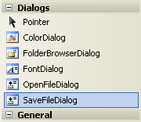

Add a Save As Dialogue Box to your C# Programmes
<< Continues from the previous lesson
Another useful Method you can use with the RichTextBox is SaveFile( ). As its name suggests, this allows you to save the file that's currently in the text box. We'll use this with another Dialog object. This time, we'll use the SaveFileDialog control instead of the OpenFileDialog control.
Return to you form, and locate the SaveFileDialog control in the Toolbox:

Double click to add one to your project. It should appear at the bottom of your screen:
Click on saveFileDialog1 to select it. Now have a look at the Properties on the right hand side of the screen. Change the Name property to saveFD:
Now go back to your File menu, on your Menu Strip. Click on File, then double click your Save menu item. This will open up the code for this item:
The code to add a Save option is practically the same as for the Open menu item. Instead of saying openFD, though, it's saveFD. Here it is:
You should be able to work out what's happening, in the code above. The line that does the saving is this one:
richTextBox1.SaveFile(Saved_File, RichTextBoxStreamType.PlainText);
Again, though, there is a better way to manipulate files. You'll learn all about
how to handle text files in a later section. For now, add the code above and
Run your programme. Click your File > Open menu item to add a text
file to your Rich Text Box. Makes some changes to the text. Then click your
File > Save menu item. You should find that the changes are permanent.
OK, let's move on from menus. In the next section, we'll take a look at CheckBoxes
and Radio Buttons.